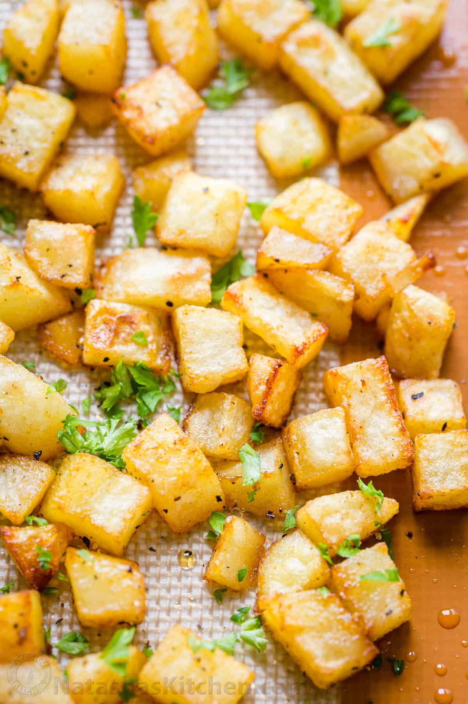

Breakfast Potatoes

These baked breakfast potatoes are so easy and will become your go-to
breakfast potatoes recipe for company and Sunday mornings!
Ingredients:
- 2 pounds yukon gold potatoes
- 1 tsp. sea salt
- 1/4 tsp. black pepper
- 1 tsp. paprika
- 3 tbsp. extra light olive oil
- 1 tbsp. parsley finely chopped
Directions:
Prep: Preheat oven to 400˚F. Line a large rimmed baking sheet (11x17)
-
Rinse and peel potatoes. Dice into 1/2" thick cubes (use a food chopper
with the larger holes if you have one)
-
Place potatoes in a large bowl and toss with 3 Tbsp oil. Sprinkle with 1
tsp paprika, 1 tsp salt and 1/4 tsp black pepper and toss to evenly coat
potatoes.
-
Immediately transfer potatoes to a lined baking sheet in a single layer
and bake at 400˚F for 20 min or until cooked through. Stir potatoes
quickly then set oven to broil and bake additional 2-4 min or until
golden brown. Serve sprinkled with parsley if desired.